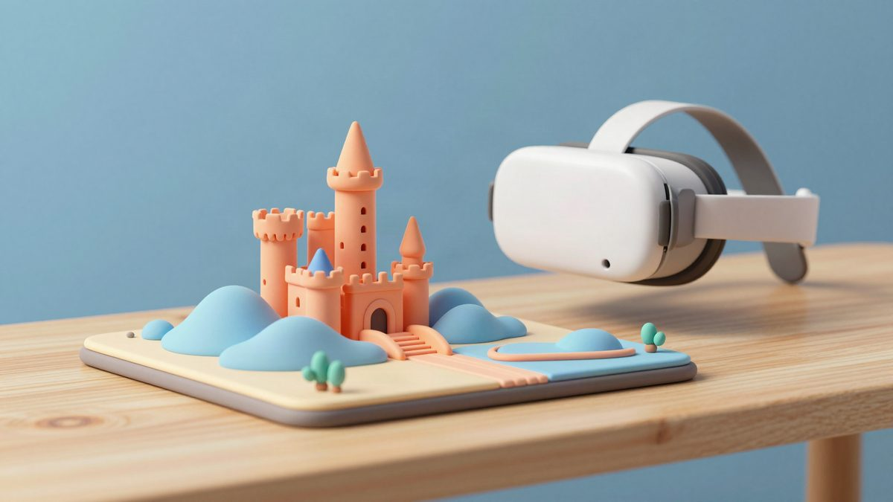

Mario 64 u mixed realityju: igra radi u pravom 3D-u na stolu, 90 FPS-a na PICO headsetu

Korisnik Reddita napravio je nativnu mixed reality verziju igre Super Mario 64 za headset PICO. Cijeli level prikazuje se u 3D-u na stolu kao diorama, a autor tvrdi da radi na 90 FPS-u. Većinu posla navodno je odradio Claude Code.
Jedan korisnik Reddita objavio je vikend projekt: nativnu mixed reality (MR) verziju igre Super Mario 64. Igra ne prikazuje ravni stereoskopski ekran. Level se renderira u pravom 3D-u, a autor tvrdi da radi stabilno na 90 FPS-a. Cijeli level pojavljuje se na stolu ispred igrača i igra se kao diorama.
Projekt je izrađen za PICO headset. Autor tvrdi da je koristio Claude Code s modelom Opus 5.5, uz Unity CLI i PICO CLI. Claude je tako mogao iz terminala graditi aplikaciju, instalirati je na headset i ispravljati je bez ručnog prebacivanja između alata.
Što je napravio Claude Code
Prema autoru, Claude Code je odradio tri stvari:
- napisao je most između SM64 decompa i Unityjevog renderera,
- pretvorio je N64 geometriju i prilagodio unos na MR kontrolere,
- otklonio probleme s frame pacingom kako bi igra držala stabilnih 90 FPS-a.
Nativni 3D je moguć jer projekt koristi javni decomp izvornog koda igre, repozitorij n64decomp/sm64 na GitHubu. Zato se geometrija levela može prikazati kao stvarni 3D objekt u prostoru, a ne kao slika na virtualnom ekranu.
Pravni okvir
Autor kaže da posjeduje originalni fizički primjerak igre Mario 64. Naglašava i da projekt nije povezan s tvrtkama Nintendo ni PICO.
Spreman je odgovarati na pitanja o radu s Claude Code-om, Unity CLI-jem i PICO CLI-jem. Hoće li projekt biti javno objavljen i kada bi mogao biti dostupan drugima, nije rečeno.
Izvor: Reddit r/ClaudeAI